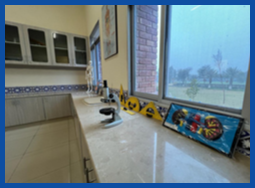
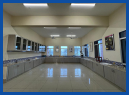
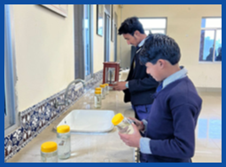
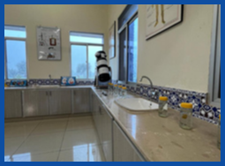

SCIENCE LAB
Embark on a journey of scientific discovery in our cutting edge Science Lab. Equipped with
state of the art tools and resources, students delve into hands-on experiments, fostering cr
riosity and critical thinking. Explore how this dynamic space ignites a passion for explo
ration and learning. The lab is equipped with the required facilities to perform practical sci
ence experiments and demonstrate the hand on experience of theoretical knowledge & knowledge of
astronomy through latest telescopic & radio dishes.
 
 
HOSTEL
The hostel of a school is defined as a second
home for children. It is the place where students
live, spend time with friends, study, and do all
the chores after school hours.
MULTIPURPOSE HALL
In a sun-dappled corner of the courtyard, Chairman Soomro’s kind eyes crinkled as
he listened intently, a weathered hand resting on the student’s shoulder. Words,
both weighty and comforting, flowed from his lips, seasoned with wisdom gleaned
from years of guiding young minds. The air hummed with a quiet respect, punctuated
by Manzoor Ahmed Soomro’s gentle reassurances, weaving hope and direction into the
tapestry of
each student’s dreams.
PLAYGROUND
Nestled amidst the hallowed halls of Quranic recitation and scholarly
pursuit, the sports field at Jamia Darul Uloom Sibghat Al Noor stands
as a vibrant testament to the institution's commitment to holistic education
. Here, amidst the verdant expanse, students cast aside their textbooks and don
their athletic gear, trading verses for volleys and prayers for pushups.
PROF. DR. AJMAL SAWAND (SHAHEED) COMPUTER LAB
Welcome to the gateway of digital exploration our Computer
Lab.
This state-of-the-art facility empowers students to delve
into
the realm of technology. From coding to research, witness
how
this lab nurtures essential skills for a tech-savvy future.
This
Lab is dedicated to the renowned professor of artificial
intelligence
Shaheed Ajmal Sawand. The lab is equipped with
30 computer systems with
the latest technology and required accessories.
Projects of EVE Foundation
Under the umbrella of the EVE Foundation, we are proud to oversee three distinct institutions, each
dedicated to serving the diverse needs of our community and fostering holistic development:
1. Jeej
al Aman Public School: As a beacon of hope in the rural landscape, Jeejal Aman Public
School is com
mitted to providing top-notch education to underprivileged children. Our
state-of-the-art facilities and
global education curriculum nurture future leaders and global
citizens, empowering them to make a positive
impact on society.
2. Jeejal Aman Vocational & Training Institute: This institute focuses on skill-build
ing and
vocational training, catering to individuals of all ages who seek practical skills for
employment
or entrepreneurship. With a diverse range of courses such as Diploma in Information
Technology,
Motorcycle Mechanic, and Computerized Accounting, we aim to equip our community
members
with the tools they need to thrive in today's dynamic workforce.
3. Jamia Darul Uloom Sibghat
Al Noor: Dedicated to Islamic learning, Jamia Darul Uloom Sibghat
Al Noor provides a nurturing
environment for students to deepen their understanding of Islamic
teachings and principles.
Through a comprehensive curriculum and dedicated faculty, we strive to
instill values
of compassion, knowledge, and piety in our students, preparing them to lead lives
guided
by faith and moral integrity.
Together, these institutions embody the mission of the EVE
Foundation to empower voices through
education, catering to the educational, vocational,
and spiritual needs of our community members
and fostering a brighter future for generations to come.